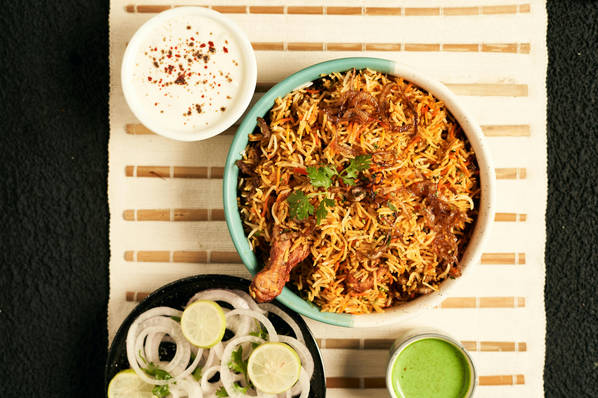

Ingredients
- 2 cups basmati rice, soaked for 30 minutes and drained
- 500 grams of meat (chicken, lamb, or beef), cut into pieces
- 1 cup plain yogurt
- 2 large onions, thinly sliced
- 4 tomatoes, chopped
- 4 tablespoons biryani masala (store-bought or homemade)
- 1 tablespoon ginger-garlic paste
- 1/2 cup chopped fresh coriander (cilantro) leaves
- 1/2 cup chopped fresh mint leaves
- tablespoons ghee or vegetable oil
- spices (2-3 bay leaves, 4-5 cloves, 4-5 green cardamom pods, 1-inch cinnamon stick, 1 teaspoon cumin seeds)
- Salt to taste
- Saffron strands soaked in warm milk (optional)
- Fried onions for garnish (optional)
Process
- Prepare the Chicken and Rice:
- Marinate chicken pieces with yogurt, ginger garlic paste, chili powder, turmeric powder, garam masala, and salt. Let it marinate for at least 30 minutes.
- Meanwhile, rinse basmati rice under cold water until the water runs clear. Soak the rice in water for about 30 minutes.
- In a large pot, bring water to a boil. Add the soaked rice along with whole spices like bay leaves, cloves, cardamom, and cinnamon. Cook the rice until it is about 70-80% cooked. Drain and set aside.
- Prepare the Fried Onions and Garnishes:
- Thinly slice onions and fry them until golden brown and crispy. Drain on paper towels and set aside.
- Chop fresh cilantro and mint leaves for garnishing.
- Layer the Biryani:
- In a heavy-bottomed pot, layer the partially cooked rice, marinated chicken, fried onions, chopped cilantro, and mint leaves. Repeat the layers until all the ingredients are used up.
- Drizzle saffron milk over the top layer of the biryani for added flavor and color.
- Cook the Biryani:
- Cover the pot with a tight-fitting lid and cook the biryani on low heat for about 20-25 minutes, or until the chicken is cooked through and the rice is fully cooked and fluffy.
- Alternatively, you can place the pot on a tawa (griddle) and cook on low heat for a more even distribution of heat.
- Serve:
- Once cooked, gently fluff the biryani with a fork to mix the layers. Serve hot with raita (yogurt dip) and/or salan (spicy gravy).